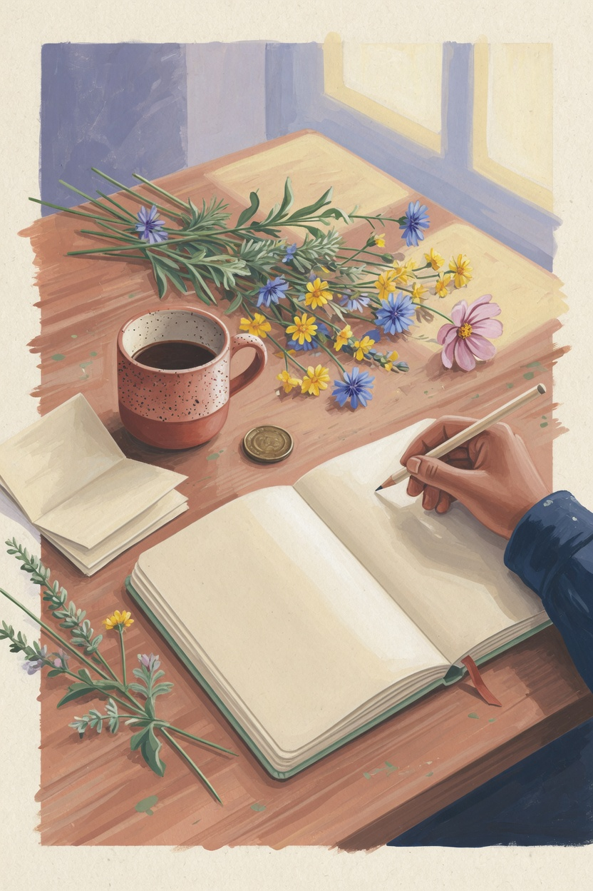
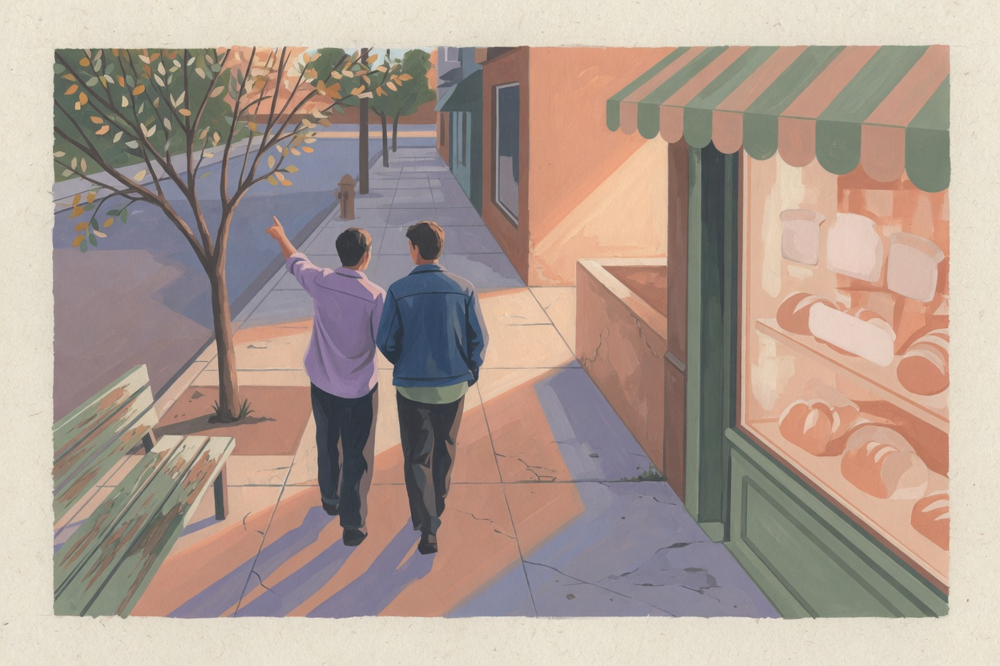
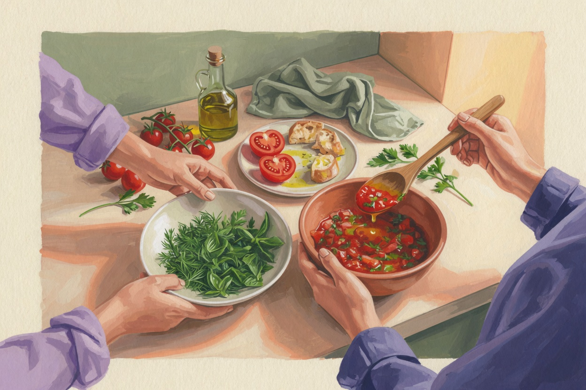
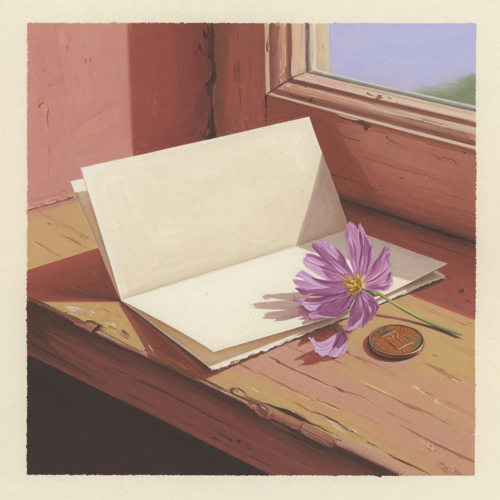

La semana se llena sola.
Trabajo, mensajes, sueño. El rato juntos queda para cuando haya un plan digno de contarse. Ese día casi nunca llega.
Verdad entre dos
Cien maneras de hacer distinto el tiempo que ya comparten. Jugar, mirar, probar algo, conversar un rato y guardar una parte de lo vivido.
Sin orden obligatorio. Sin fecha especial. Con permiso de decir «paso».
100experiencias, cada una con cierre
10puertas para entrar según el día
5 minalcanzan para una cita completa
220páginas en el PDF
El punto de partida
Trabajo, mensajes, sueño. El rato juntos queda para cuando haya un plan digno de contarse. Ese día casi nunca llega.
Quién compra, a qué hora, qué falta. La conversación existe. La que los vuelve a descubrir se fue postergando.
Quedan veinte minutos y el teléfono gana, porque nadie trajo una excusa pequeña, concreta y amable.

La otra manera
Elijan por ganas. Repitan las favoritas. Dejen otras para otro día. Una cita que les regale una risa, una pausa o un recuerdo nuevo ya hizo su trabajo.
Duración, lugar, presupuesto y energía. El índice está hecho para una vida real, no para un fin de semana ideal.
Cada experiencia dice cómo empezar, qué hacer y dónde está la sorpresa. Si algo no les acomoda, lo cambian.
Una frase, un detalle, una canción. La cita deja de evaporarse en cuanto termina la noche.
Diez puertas
Las descripciones salen del propio índice. Dentro de cada puerta, las citas pueden abrirse en cualquier orden.
Capítulo 01
Preguntas, recuerdos y conversaciones para seguir conociéndose sin prisa.
Capítulo 02
Juegos para competir con amabilidad, colaborar o jugar sin presión.
Capítulo 03
Recetas, bebidas y sobremesas alrededor de lo que ya tienen o eligen.
Capítulo 04
Paseos cercanos y pequeñas observaciones para descubrir lo familiar.
Capítulo 05
Ideas hechas a mano donde importa más el proceso compartido que el resultado.
Capítulo 06
Canciones, sonidos y escenas para escuchar con curiosidad y libertad.
Capítulo 07
Películas, relatos y momentos cotidianos convertidos en historias propias.
Capítulo 08
Objetos, fotos opcionales y recuerdos que pueden guardar a su manera.
Capítulo 09
Detalles posibles que respetan los límites, el tiempo y la comodidad de ambos.
Capítulo 10
Citas breves y flexibles para compartir el día que realmente tienen.


Una cita, abierta
Cita 001 · Tierna
Una pausa para descubrir cuánto cariño cabe en lo cotidiano.
El giro. No revelan el recuerdo hasta que la otra persona haya leído la pista y hecho su conjetura. Escucharlo desde fuera puede revelar algo que el día a día había vuelto invisible.

Las otras noventa y nueve siguen esta misma arquitectura: inicio, tres movimientos, un giro, una pregunta entre ustedes y una ficha para conservar.
Para una vida con horario
Tres puertas reales del libro. Ninguna pide una ocasión especial.
El capítulo 10 existe para el día que de verdad tienen, no para el día que desearían tener.
Cada quien elige una cosa para mostrar, contar o señalar. La otra persona mira ese turno sin hacer otra cosa a la vez.
Un minuto en silencio, una cosa que agradecen de este momento y la decisión de seguir o cerrar. Cualquiera puede terminar antes.
Una canción, una bebida o una vuelta por el pasillo. Un tiempo breve cuenta como cita completa.
Cambian de mesa, de rol o de idioma. No hace falta salir para que el rato se sienta distinto.
Dos papeles, un bolígrafo y un recuerdo que el día a día había vuelto invisible.
Una frase que ya es de ustedes, más una señal amable para pedir pausa y otra para «esto me dio risa».
Una persona describe el paso. La otra cocina. A mitad de receta cambian de rol.
Hay citas gratis, citas de bajo presupuesto y citas que usan lo que ya está en la mesa.
Tres decisiones pequeñas. El azar pone sorpresa y ustedes conservan el derecho de decir «paso».
En cada cruce, la dirección que menos suelen tomar. También se puede hacer mirando un mapa desde casa.
Dos frases amables, dejadas en un lugar cotidiano. Se lee cuando los dos quieren encontrar una nota.
Prueben el gesto
En el libro, cada círculo es una cita vivida. Aquí pueden marcar una, solo para sentir el peso de una historia que avanza a su ritmo.
0 / 100
La marca se queda en este navegador. En el PDF, la marca se queda en la página.
Es para ustedes si
Es otra conversación si
Líneas del propio libro
«Una cita que les regale una risa, una pausa o un recuerdo nuevo ya hizo su trabajo.»
Nota de apertura
«Esta colección no espera a una fecha especial ni a un plan perfecto.»
Nota de apertura
«Un tiempo breve cuenta como cita completa.»
Cita 091 · La cita de quince minutos
«Cien posibilidades. Una historia hecha a su manera.»
Pasaporte
Qué reciben
Si ese cuaderno corto ya les sirvió, aquí siguen las otras. Si todavía no lo vivieron, pueden entrar directo a las cien. El libro lo dice al cierre de las cinco: los próximos 95 esperan, y no hay un orden que cumplir.
Cómo se usa de verdad
Tres citas ya son una historia. Las otras noventa y siete pueden esperar su día.
La historia completa
El precio está en la pasarela, visible antes de pagar. Esta página no inventa un descuento ni un cupo que se acaba.
La urgencia real es otra: el martes de esta semana también puede quedar en blanco.
Preguntas
Es una colección de experiencias. Cada una dice cuánto dura, qué necesitan, cómo empezar y cómo guardar lo que pasó. Las frases del Instagram siguen viviendo en la página. Esto es el paso en el que el mensaje se vuelve una cita.
No. El pasaporte lo dice: elijan a su ritmo, repitan las favoritas y dejen otras para otro día. Cien citas no son una meta. La historia es lo que ustedes vivieron.
Hay citas de cinco minutos y citas gratis o de bajo presupuesto. Muchas ocurren en casa, con lo que ya tienen. El índice permite filtrar por eso antes de elegir.
Hay silencio, cocina, caminata, música y notas. Cualquiera puede decir «paso». Ninguna consigna es un examen.
No. Es una excusa bien diseñada para estar juntos. Si hay una crisis, buscan ayuda de verdad. Este archivo no pretende resolverla.
Hotmart procesa el pago y entrega el archivo digital. Lo abren en el teléfono o en el computador. Si quieren pegar fotos en una ficha, el propio PDF explica que pueden imprimirla o usar la versión editable.
Esas cinco son la puerta: una experiencia corta para salir de la rutina. Esta es la historia completa, en diez capítulos. Las primeras cinco ya forman parte del universo. Aquí están las cien.
Verdad entre dos
La historia es lo que ustedes vivieron. Amor, honestidad y lealtad, porque lo real se construye entre dos.
Quiero 100 citas para mi historia100 citas, una historia
Quiero mis 100 citasAntes de irse
No hace falta una noche libre para empezar. Hay experiencias del largo de un café que se enfría.